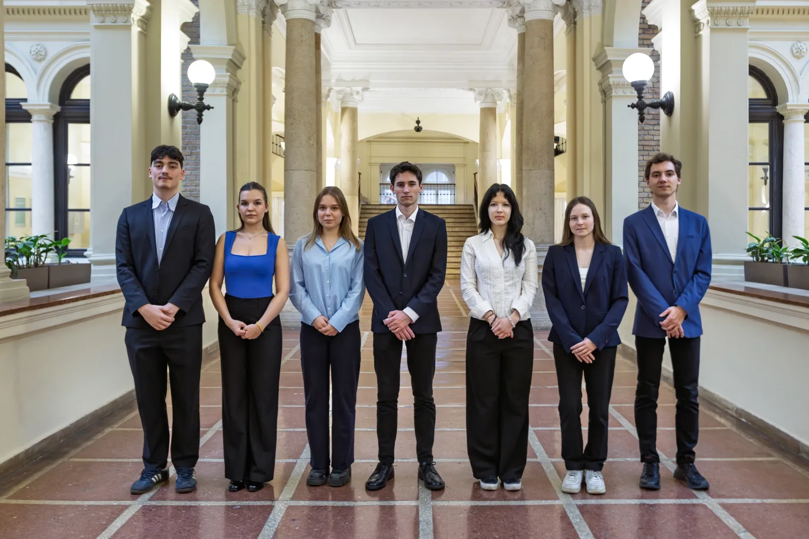
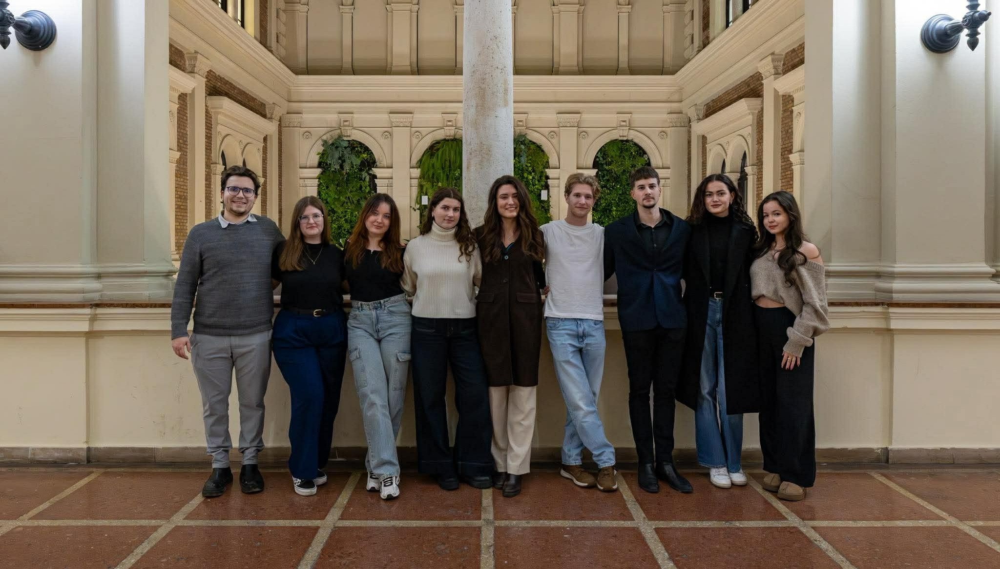

Our Organization
Presidency
The highest decision-making body of HÖK is the Presidency, which consists of the organization's president and two vice presidents. Students can indirectly decide on the president every two years and on the vice presidents annually through the Delegate Assembly elections. The new Presidency, established in June 2023, includes Kristóf Kovács, Kristóf Oltyán, and Martin Schwemmer. Their main objectives are fundamentally rethinking student representation strategy, strengthening HÖK's transparent operation, and increasing internal democratic functioning.

HR Department
The HR Department holds significant organizational responsibility, as it shapes the organization's culture, supports members' professional development, and strengthens the community through internal events while maintaining motivation. Additionally, it is responsible for integrating new members and team building, which fundamentally determines the organization's operation and efficiency.
Communication Department
The Communication Department manages Corvinus HÖK's social media pages, for which we create video and image content. An important part of the department is building an active and flexible relationship with students so that HÖK can create an exciting university life.

International Department

The International Department is responsible for integrating international students, which they support through events organized by the International Students' Club. They are also responsible for representing their interests through an Advisory Board composed of international students, as well as organizing the Pannonia scholarship program (formerly Erasmus+) and other programs, providing information about these, and then evaluating them.
Event Organization Department
The Event Organization Department ensures that university life is not just about studying. We help integrate freshmen through various exciting events, and we work throughout the year to break up the gray weekdays with diverse, unique, and unforgettable programs. And of course, we're responsible for the parties too! Our goal is to ensure students never get bored!

Education Department

The Education Department performs a significant part of HÖK's advocacy activities. Its members have decision-making roles in various university committees, help answer student inquiries and resolve student grievances. Additionally, they are responsible for building the Demonstrator community and the Program Delegate Program.
Student Organization and College Department
The Student Organization Department brings together and represents Student Organizations and Colleges. In addition to organizing community and professional programs, official processes, applications, and advocacy also play a prominent role.

Finance Department

The Finance Department is the heart and soul of HÖK. Besides procurement and financial accounting, we are responsible for HÖK's entire budget and managing grant applications.
Student and Social Committee
The Student Social Committee plays a key role in the fair and precise evaluation of university scholarships and dormitory applications. Its members help students submit complete applications through office hours, student guides, and social media posts. Additionally, they actively contribute to student advocacy and participate in university decision-making: they review the application criteria semester by semester and make modification proposals to better match students' current situations.